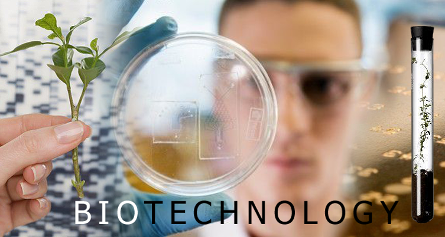

Biotechnology is a combination of two subjects- Biology and Technology. Broadly speaking, it brings together concepts of Biology and Engineering and aims at putting concepts of both these subjects together, in a bid to enrich our lives and make innovative developments.
Biotechnology course material can be classified into two sections- theory section and practical section. In theory section, students will have to deal with subjects related to biology as well as basic technology concepts.
12th Science stream students are eligible to apply for this course. Both PCM (Physics, Chemistry and Mathematics) as well as PCB (Physics, Chemistry and Biology) group students are eligible for this course.
Students have to appear for State wide as well as National level admission entrance tests to get admission in Government approved Institutes.
B.Sc. Biotechnology course is a 3 years long course. Theory, practical and research project- all these parts have to be dealt with in these 3 years duration.
The major advantage of doing a B.Sc. course in this subject is that the course duration is short, when compared to a B.E./B.Tech. program. B.Sc. course takes 3 years to complete. Whereas B.E./B.Tech. program takes 4 years.
Another advantage is the relatively low saturation level in this field. From facts and figures, it is quite evident that B.Sc. Biotechnology is not a very popular professional course among 12th Science students. Students prefer courses like B.E./B.Tech., MBBS, BDS etc. On seeing the ‘B.Sc.’ label, they tend to ignore Biotechnology course. This has resulted in relatively less number of takers for this course. Ultimately, this has resulted in low job market saturation too! So, it is safe to say that finding a good job after graduation won’t be a tough task, when compared to heavily saturated courses!
CAREER PROSPECTS, JOB OPPORTUNITIES, SALARY AND SCOPEAs I pointed out above, this is a rapidly developing field. Many private businesses are exploring this field and heavily investing in it. It is safe to say that there are ample job opportunities for Biotechnology graduates in private sector. Government sector too offers job opportunities, but not in the scale in which private sector does.
Some prominent industries where Biotechnology professionals may find jobs are- Pharmaceuticals Industry, Healthcare sector, Chemical Industry and Research sector.
Research sector in particular is quite lucrative. One may build a rewarding career in this field. To thrive in this field, one must possess B.Sc. as well as M.Sc. Degree! Average starting salary generally is between 2- 5 Lakh Rupees per year.
Then comes the attractive prospect of availability of lucrative scholarships. Many State Governments are offering all studies expense covering scholarships to meritorious students, who choose to pursue B.Sc. course. Such scholarships are provided to students scoring above 85% merit marks only.
Biotechnology is a rapidly developing sector. Advancements are being made at good pace in this sector. Big firms are pouring in big money into it and new business opportunities are developing in this sector. These things have led to huge increase in job openings in this sector. In short, Biotechnology graduates are in huge demand these days.